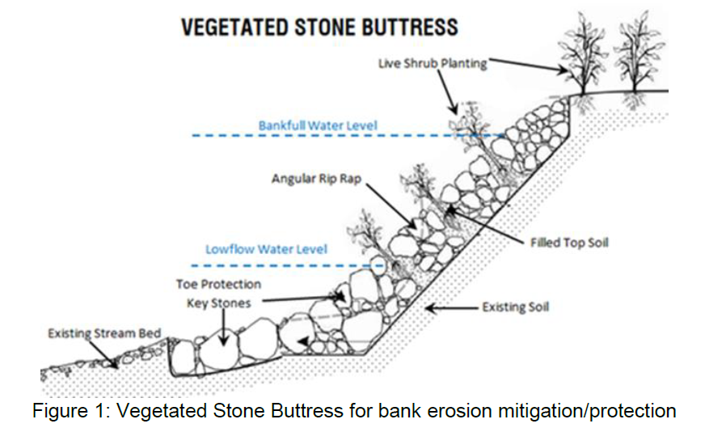
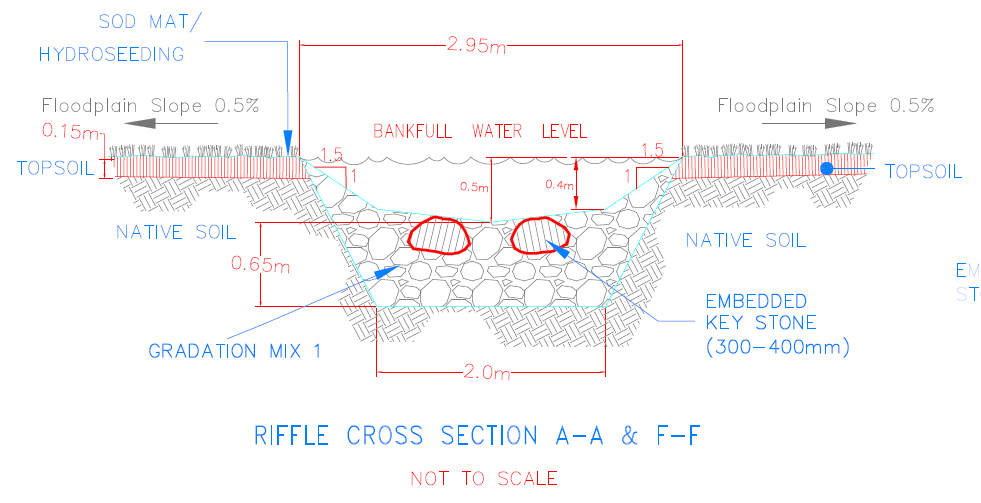
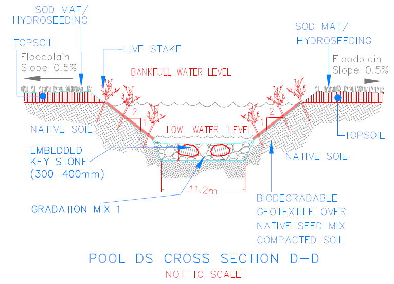
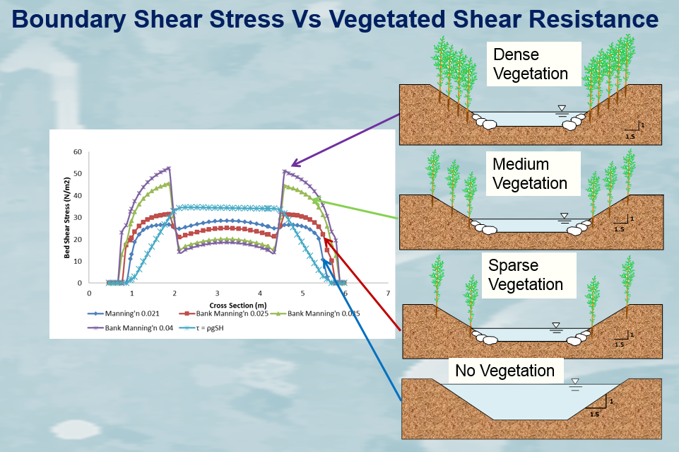

Coastal Engineering
AHYDTECH senior members possess extensive expertise and can provide services in Coastal Engineering including
shoreline management, shoreline erosion protection, marina design and the implementation of waterfront projects.
We have experience in following coastal engineering projects: Seawall, Revetment, Groin & Marina Design, Erosion
& Flooding Hazard Delineation, Shoreline Inventory, Shoreline Structural Condition Assessment, Bathymetry Data
Collection, 2D and 3D hydrodynamic, Sediment Transport and Water Quality Modeling, Shoreline Erosion and Dynamic
Beach Analysis, Shoreline Design and Protection Works, and Water Quality Modeling and Analysis. We provide services
in shoreline management, permit and approval from the regulating agencies, determination of Erosion and Flooding Hazard limits,
Shoreline Erosion protection, Seawall, Revetment and Groin design, Marina design and the implementation of waterfront projects.
Fluvial Geomorphology
AHYDTECH Geomorphic can offer practical applications of Fluvial Geomorphology in the following areas:
Subwatershed Studies, Subdivision & Environmental Impact Reports, Municipal Sewer and Watermain Crossing,
Road Construction & Widening, and Bridge & Culvert Installation/Replacement. AHYDTECH Geomorphic can provide
Fluvial Geomorphic services in the following fields: Natural Channel Design, Meander Belt Width & Hazard Limit
Estimation, Channel Restoration, Channel Realignment, Field Geomorphic Assessment & Monitoring, Sediment Transport
Measurement & Monitoring, River Bank Erosion Protection, River & Stream Scour Control and Monitoring.

Vegetated Stone Buttress

Rifle Cross Section A-A & F-F
Rifle Cross Section A-A & F-F

Pool DS Cross Secton D-D

Boundary Shear Stress vs. Vegetated Shear Resistance
Boundary Shear Stress vs. Vegetated Shear Resistance
Hydrology & Hydraulic Modeling
AHYDTECH employees possess the ability to analyze and produce complex fluvial models.
AHYDTECH has resources to provide innovative techniques and solutions through the application
of hydrologic and hydraulic models to make more accurate predictions and to face the major challenges
in water resources management.
Stormwater Management for Development Applications
At AHYDTECH Geomorphic, we are able to produce various tools to manage stormwater
flow for development applications. These tools include floodplain mapping, flood hazard analysis,
water quality monitoring and other various stormwater management applications.
Environmental Assessment
AHYDTECH Geomorphic employees are highly trained in the field of Environmental Assessment.
We can provide various analytical and numerical modeling techniques, fluvial geomorphic applications
and other hands-on environmental assessment applications. These methods can be used to develop detailed
assessments.
Topography & Bathymetry Surveying
AHYDTECH Geomorphic has professional civil engineers (P. Eng.) who can perform topography and
bathymetry surveys. Our surveying staff members have experience in completing cross-section and
topographic survey for natural channel design, channel restoration and stream stabilization,
coastal engineering structure inspection, and channel/shoreline restoration/naturalization purposes.
We use Drone DJI Phantom 4 RTK + D- RTK, GPS and GNSS unite and Nikon DTM-322 total station to perform survey.
AHYDECH has Lowrance Elite-4 CHIRP and HY1500 Digital Echo Sounder bathymetric survey unit, which has a
recording sonar to measure depth and GPS to provide geo-reference coordinates.
Automated Bathymetry
AHYDTECH has an Unmanned Surveying Vehicle (USV) for measurement of bathymetry using HY1500 Digital Echo Sounder
bathymetric survey unit. It uses an onboard computer, GPS/RTK, depth sounder and other instruments. The boat’s
powerful outdrives are capable of reaching speed up to 3m/s and efficient V-bottom design produces smooth,
predictable, agile handling even rough waters. The 2 electric propellers provide thrust while producing little
noise, this improve the quality of the acoustic sounders data. Its remote- control range is about 2km. The USV
has 4-hour battery life. When used with a land based computer, it has the Hydra-II software for automated
guidance and route planning.